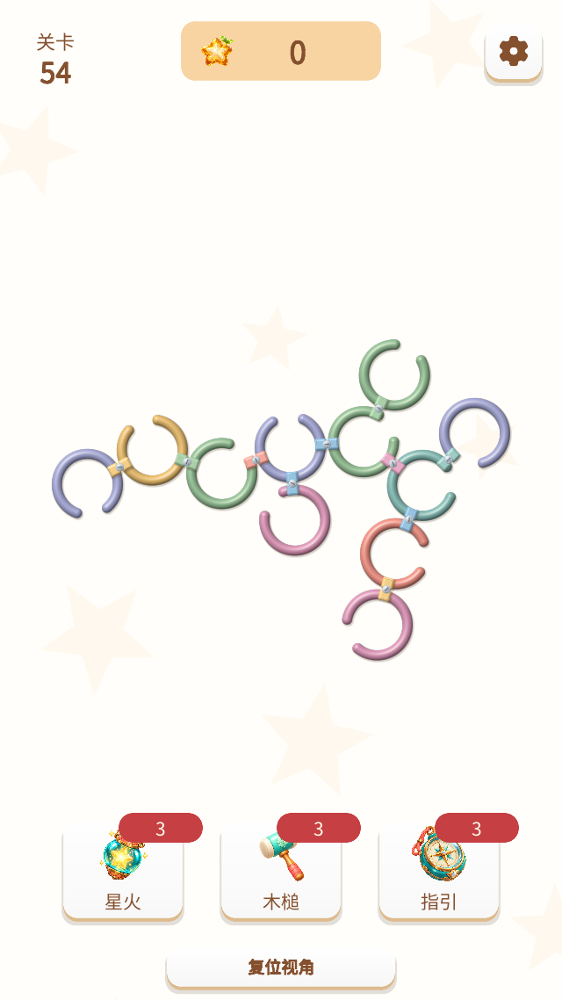
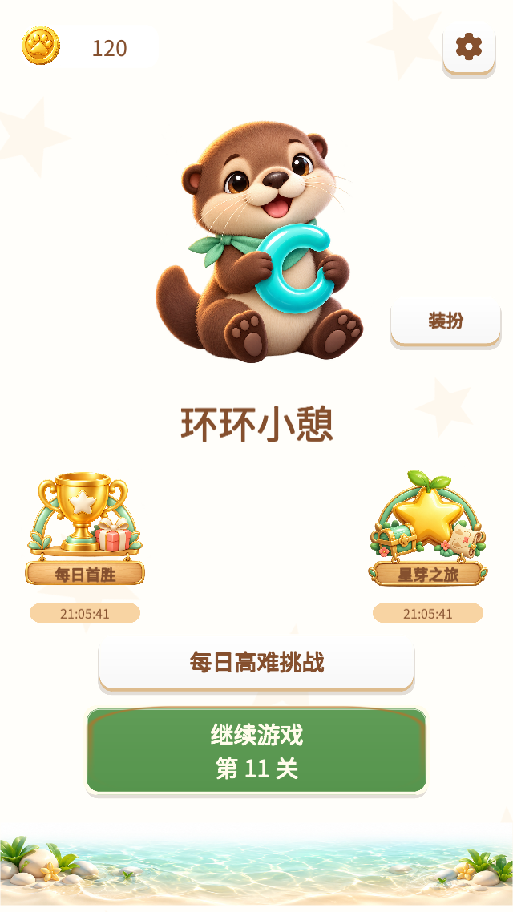
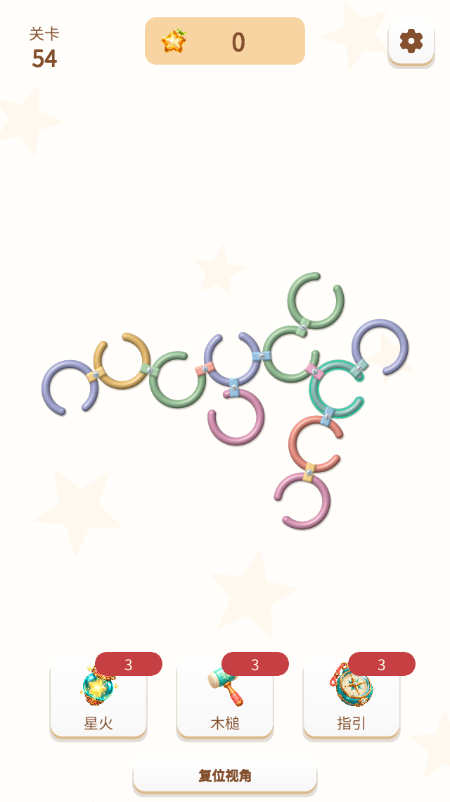
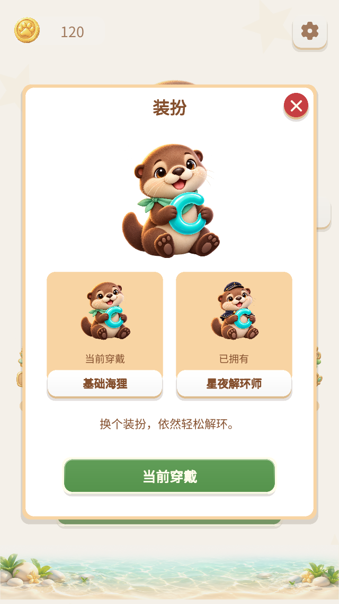

先拆外围，再处理中间
遇到分叉或闭环时，先从外围找能对齐的开口。拆掉一枚环，再沿着剩下的连接找下一步。

AI 游戏作品 / 休闲解谜
转一转，把扣在一起的圆环解开。
沿着彩环的开口找解法，清空棋盘。主线穿插 30 个炸弹关和 30 个奖励关，每日挑战还会送出海狸换装奖励。
Unity 原型 · 编辑器演示

遇到分叉或闭环时，先从外围找能对齐的开口。拆掉一枚环，再沿着剩下的连接找下一步。

绿色细描边跟着正在拖动的圆环，环体保留原来的颜色。看到同色碎裂，就知道这处连接已经解开。

普通关靠清场推进。遇到特别关，旋转解扣的操作一样，目标变成控制回合或尽量多收集。
完成 10 个普通关后解锁，每天一次，退出后可续玩同一局。首题有 24 环、29 扣，大环让开口和连接处看得更清楚。
棋盘上有两处封闭结构，至少用两次木槌才能解开。关卡配有专用木槌，可以留给靠旋转解不开的地方，再判断关键连接的先后顺序。

赢下每日挑战，领取新海狸外观 Night Keeper。回主页打开衣柜，就能预览和换装。

最后一枚环移除后先庆祝清场，再看本局积分与奖励。领完奖励，从结算页继续下一关。